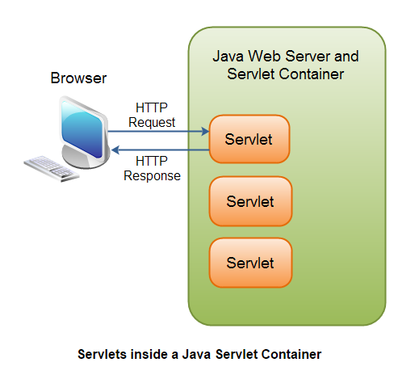
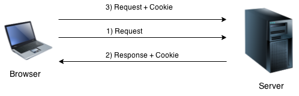
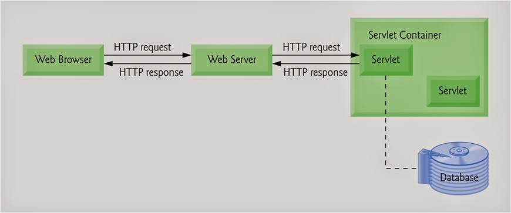

SERVLETS
What are Servlets?
Servlets are Java Programs thay sits in a server and when a request comes, it will come into play.
Servlets are mapped into the a URL. The term Servlets was coined from the word Java Applet which is a program that is usually
sent as a separate file with an HTML page. Java Applets are usually used by running a client that can perform calculation for the client or user
or it is used to position images based on the interaction of the user.
Java Servlets runs inside a container, it is an object that responds to an HTTP Request.

Servlets Advantages to Common Gateway Interface
- Performance is significantly better.
- Servlets execute within the address space of a Web server. It is not necessary to create a separate process to handle each client request.
- Servlets are platform-independent because they are written in Java.
- Java security manager on the server enforces a set of restrictions to protect the resources on a server machine. So servlets are trusted.
- The full functionality of the Java class libraries is available to a servlet. It can communicate with applets, databases, or other software via the sockets and RMI mechanisms that you have seen already.
Servlets Packages
Servlets can be created using the javax.servlet and javax.servlet.http packages , which are a standard part of the Java's enterprise edition, an expanded version of the Java class library that supports large-scale development projects.
Servlets Tasks
Servlets can perform the following major tasks:
- Send the implicit HTTP response to the clients (browsers).
- Send the explicit data (i.e., the document) to the clients (browsers).
- Read the explicit data sent by the clients (browsers).
- Read the implicit HTTP request data sent by the clients (browsers).
- Process the data and generate the results.
Typical uses for HTTP Servlets:
- Processing and/or storing data submitted by an HTML form.
- Providing dynamic content, e.g. returning the results of a database query to the client.
- Managing state information on top of the stateless HTTP, e.g. for an online shopping cart system which manages shopping carts for many concurrent customers and maps every request to the right customer
Servlet Life Cycle
- Load Servlet Class
- Create Instance of Servlet
- Call the servlets init() method
- Call the servlets service() method
- Call the servlets destroy() method
HTTP Servlet Class Method:
- doGet()
- doPost()
- doHead()
- doPut()
- doDelete()
- doOptions()
- doTrace()
Cookies in Servlets
Cookies are small pieces of informations that is persisted between multiple clients.
A cookie has the following:
- Name
- Single Value
- Comment(optional)
- Path(optional)
- domain qualifiers(optional)
- Maximum Age
- Version Number
The following diagram shows how a cookie works.

Types of Cookies
- Persistent Cookie
- it is valid for multiple sessions, the cookie will only be removed once the user will logout or signout.
- Non-Persistent Cookie
- it is valid for only a single session, the cookie will be removed everytime the browser will be closed.
Advantages of Cookies
- It is a simple way to maintain the state of a website.
- It is maintained in the Client Side.
Disadvantages of Cookies
- If the cookie is disabled in the browser, it will not work.
- Textual Infromations are the once only that can be set in the object of the cookie.
Servlets Architecture
This Diagram shows the Architecture of the Servlets
